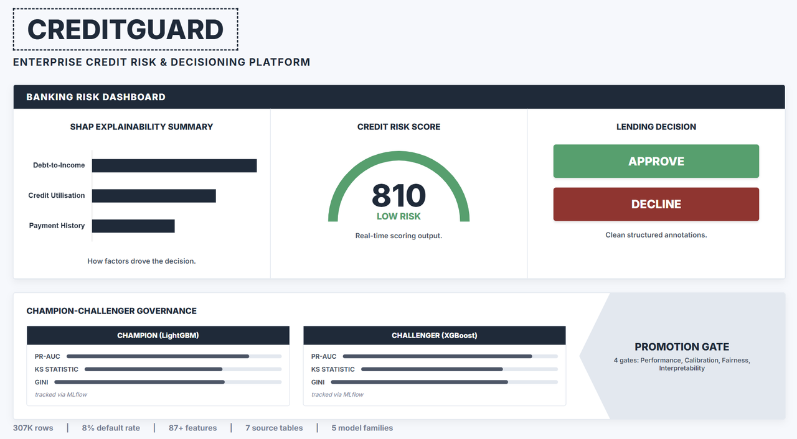
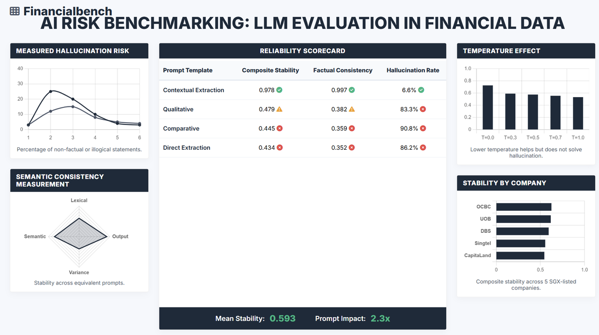

About

AI/ML Engineering & Responsible AI
I work on ML systems in regulated domains — credit risk, compliance, financial data. Most recently, I was in people analytics at a Singapore bank, supporting retention-risk modelling. Most of what I learned there was about what happens after the model is trained: getting it explainable, auditable, and into production with proper governance.
- Email josephhzy22@gmail.com
- City Singapore
- Degree BBM (Finance), SMU
- Programme Specialist Diploma in Data Analytics & Data Engineering
The projects below cover different parts of the ML lifecycle — feature engineering, model evaluation, RAG pipelines, and deployment. Each one has tests, CI, containerisation, and logging because I wanted them to feel like real systems, not just notebooks.
Portfolio
Five projects covering people analytics, credit risk, regulatory search, LLM evaluation, and production RAG. Each one taught me something different about getting ML into production.

HDS — Employee Attrition Prediction & HR Decision Support
Monthly attrition risk scoring for HR teams. Flags at-risk employees with plain-English reason codes, routes them through contact suppression and HRBP review, and tracks intervention outcomes in a closed-loop ledger. Fairness audits and drift monitoring built in.

CreditGuard — Credit Default Early Warning & Decisioning
Credit default prediction on a 307K-row banking dataset with 7 relational tables. 8% default prevalence, SHAP explanations for each decision, fairness checks across subgroups, champion-challenger promotion via MLflow, and an interactive Streamlit dashboard for threshold, calibration, and fairness exploration.

MASquery — Regulatory Compliance RAG System
Answers questions about MAS banking regulations. Dense retrieval with a cross-encoder rerank is the measured default (hybrid BM25 + vector + RRF available as opt-in). Refuses when retrieval confidence is low and verifies every citation against the source documents before returning it.

Financialbench — LLM Evaluation & AI Safety Testing
Ran 660 structured evaluations to measure where LLMs hallucinate on verified financial facts from SGX-listed companies. Found a 65% hallucination rate on numerical data and 2.3x sensitivity to prompt wording. Results are explorable in a live dashboard.

LLM Ops — Production RAG Platform with Guardrails
A RAG platform with pre- and post-generation policy checks, document access controls, champion-challenger model promotion, and audit logging. 90 tests, Prometheus metrics, and Kubernetes manifests.
Contact
Open to opportunities in applied AI, data science, and ML engineering in Singapore.